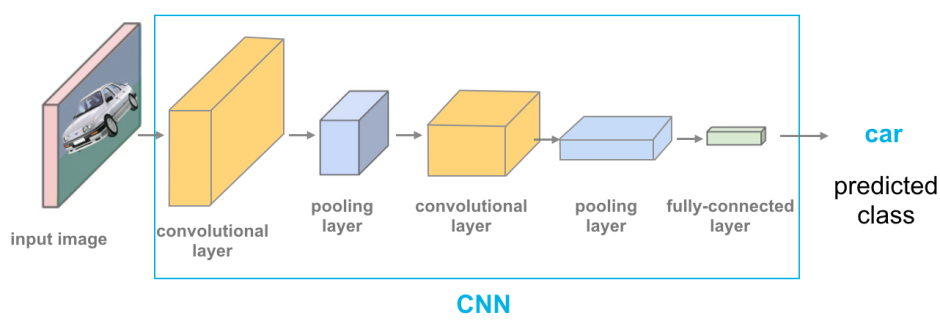
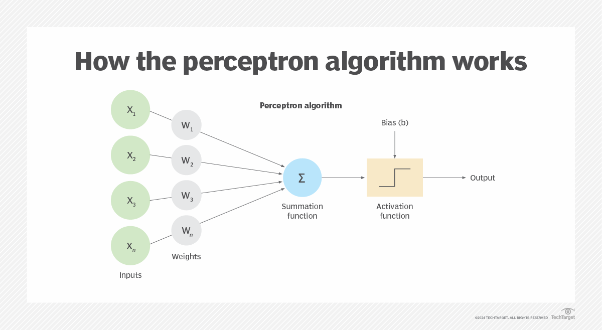
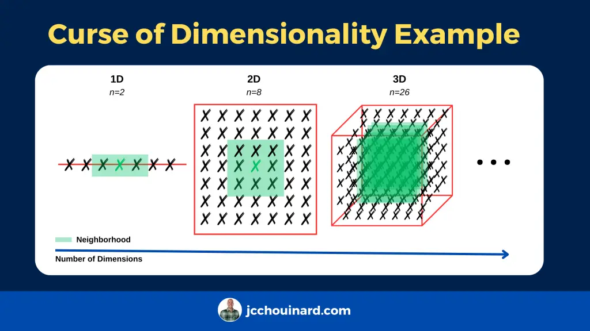
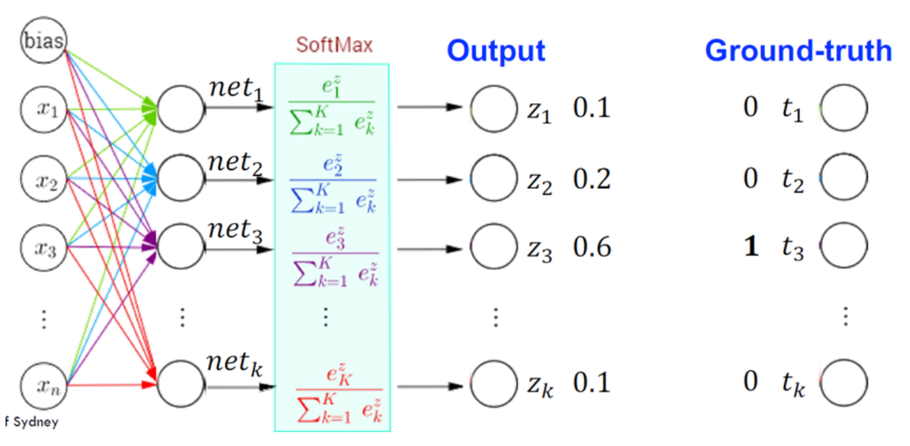
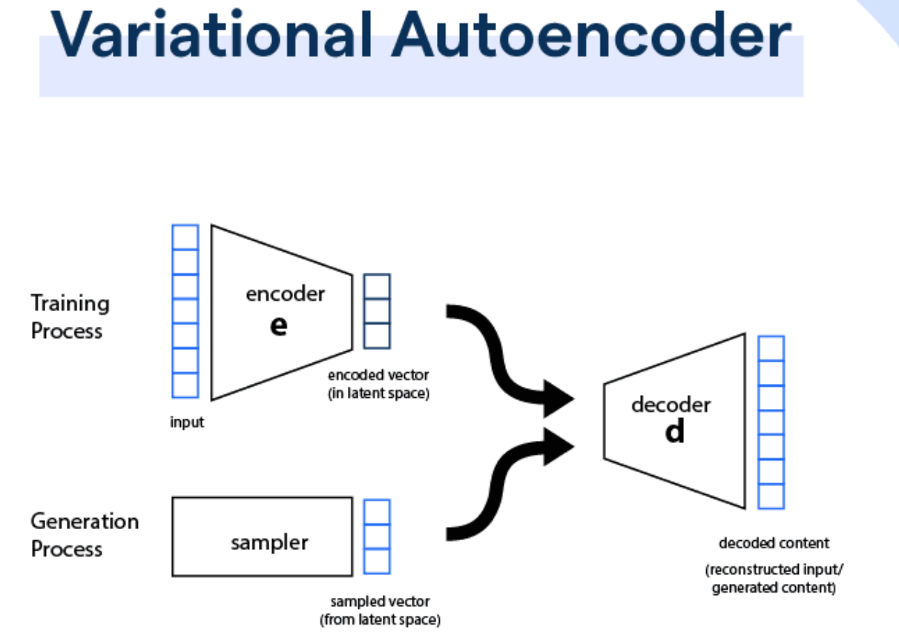

檔案7：L11302 常見的機器學習模型（100題）
共100題（難度比照初級樣題）
1. 出題頻率/重要性：★★★
由大綱出題：Yes（參考：初級大綱.txt - L11302 常見的機器學習模型）
「線性迴歸 (Linear Regression)」屬於何種機器學習模型範疇？
答案：B

解析：線性迴歸為典型的監督式迴歸模型，依據標籤(連續值)訓練。
2. 出題頻率/重要性：★★
由講義出題：Yes（參考：04_機器學習技術理論與案例_講義.pdf 第12頁）
「羅吉斯迴歸 (Logistic Regression)」實際上最常用於？
答案：C

解析：Logistic Regression雖名為迴歸，實際透過sigmoid函式做二元分類。
3. 出題頻率/重要性：★
由講義出題：No（外部延伸參考）
決策樹 (Decision Tree) 通常是透過什麼原則進行特徵選擇？
答案：A
解析：常用的決策樹演算法(如ID3, C4.5, CART)皆透過量測分裂後資訊增益或基尼係數以決定最佳分裂特徵。
4. 出題頻率/重要性：★★
由講義出題：Yes（參考：04_機器學習技術理論與案例_講義.pdf 第20頁）
「隨機森林 (Random Forest)」中的每棵樹，樣本和特徵的選擇方式是？
答案：A
解析：Random Forest使用Bagging概念對資料做bootstrap抽樣，且每分裂節點時隨機選部分特徵。
5. 出題頻率/重要性：★★★
由大綱出題：Yes（參考：初級大綱.txt - L11302 常見的機器學習模型）
支持向量機 (SVM) 的關鍵概念為？
答案：B

解析：SVM 透過最大化類別間的margin，提高泛化能力，核函式可處理非線性。
6. 出題頻率/重要性：★
由講義出題：Yes（參考：04_機器學習技術理論與案例_講義.pdf 第28頁）
「KNN (K-Nearest Neighbors)」的主要決策依據是什麼？
答案：A

解析：KNN 屬於懶惰學習算法，不需要明確的訓練階段，只在預測時找最近鄰居決定類別或數值。
7. 出題頻率/重要性：★★
由講義出題：No（外部延伸參考）
「Naive Bayes」在文字分類（如垃圾郵件分類）中常見原因是？
答案：A

解析：Naive Bayes 假設特徵條件獨立，對文本型高維特徵仍能有效學習，且計算簡單。
8. 出題頻率/重要性：★★★
由講義出題：Yes（參考：04_機器學習技術理論與案例_講義.pdf 第38頁）
「集成學習 (Ensemble)」如Bagging、Boosting的核心想法是？
答案：A

解析：Bagging(如隨機森林)並行投票；Boosting(如XGBoost)序列補誤差，共同提升效能。
9. 出題頻率/重要性：★
由大綱出題：Yes（初級大綱.txt - L11302 常見的機器學習模型）
線性模型常做特徵工程，原因是？
答案：B
解析：線性模型要學到彎曲或交互效應，需顯式加入非線性特徵(如x1*x2,x^2)。
10. 出題頻率/重要性：★★
由講義出題：Yes（參考：04_機器學習技術理論與案例_講義.pdf 第52頁）
在樹模型中，若沒有任何限制，可能會如何？
答案：A
解析：決策樹若不做max_depth或最小樣本分裂等限制，易高度擬合訓練集雜訊。
11. 出題頻率/重要性：★★★
由講義出題：Yes（參考：01_AI基礎理論_講義.pdf 第80頁）
「深度學習 (Deep Learning)」中的神經網路與傳統ML模型相比，關鍵不同在於？
答案：A

解析：多層網路具自動特徵學習能力，且在大數據與GPU運算支持下大放異彩。
12. 出題頻率/重要性：★
由講義出題：No（外部延伸參考）
「神經網路 (Neural Network)」中，激活函式 (Activation) 的作用是？
答案：B

解析：若無激活函式，每層都是線性疊加，最終仍是線性模型，無法學習高階非線性。
13. 出題頻率/重要性：★★
由大綱出題：Yes（初級大綱.txt - L11302 常見的機器學習模型）
「深度前饋網路 (Feedforward NN)」與「捲積神經網路 (CNN)」差異為？
答案：A
解析：CNN特點是卷積層與池化層，可抽取空間結構特徵，常用於影像任務。

14. 出題頻率/重要性：★★★
由講義出題：Yes（參考：04_機器學習技術理論與案例_講義.pdf 第45頁）
隨機森林與梯度提升樹 (GBM) 的主要差異在？
答案：A
解析：RF並行投票；GBM序列boost。兩者都是樹集成，但過程截然不同。
15. 出題頻率/重要性：★
由講義出題：No（外部延伸參考）
「Multinomial Naive Bayes」通常應用於？
答案：B
解析：多項式NB特別適合詞頻向量(計數型)的多分類任務，如文本分類。
16. 出題頻率/重要性：★★
由講義出題：Yes（參考：04_機器學習技術理論與案例_講義.pdf 第60頁）
「Lasso (L1)」與「Ridge (L2)」回歸的相同點是？
答案：A

解析：L1與L2都在目標函式中加入權重懲罰項，只是形式不同(L1=|w|、L2=w^2)。
17. 出題頻率/重要性：★★★
由講義出題：Yes（參考：01_AI基礎理論_講義.pdf 第85頁）
「RNN (Recurrent Neural Network)」特別適合處理哪種資料型態？
答案：A

解析：RNN使用隱狀態可記錄序列上下文資訊，常應用於語音、語言、時間序列預測等。
18. 出題頻率/重要性：★
由講義出題：No（外部延伸參考）
「強化學習 (Reinforcement Learning)」的學習方式與監督式學習不同點是？
答案：B
 "
"
解析：強化式學習不預先提供每一步正確答案，而是透過獎懲在連續行動中學得最佳策略。
"
19. 出題頻率/重要性：★★
由講義出題：Yes（參考：04_機器學習技術理論與案例_講義.pdf 第70頁）
「GBDT (Gradient Boosting Decision Tree)」與「XGBoost」之差異？
答案：A

解析：XGBoost 在GBDT基礎上做了許多工程改進(如並行、樹方法優化)，效能普遍較好。
20. 出題頻率/重要性：★★★
由講義出題：Yes（參考：01_AI基礎理論_講義.pdf 第88頁）
卷積神經網路 (CNN) 最早在哪種領域展現強大效果？
答案：A
解析：CNN在影像分類中大幅超越傳統手工特徵方法，如LeNet, AlexNet的誕生即突破ImageNet。
21. 出題頻率/重要性：★
由大綱出題：Yes（初級大綱.txt - L11302 常見的機器學習模型）
K-Means屬於哪一類模型？
答案：A

解析：K-Means是將資料自動分成K群的演算法，並無標籤，屬非監督式分群。
22. 出題頻率/重要性：★★
由講義出題：No（外部延伸參考）
「DBSCAN」與「K-Means」在分群時有何差別？
答案：A

解析：DBSCAN透過ε鄰域和MinPts定義密度，能自動發現叢集並標記雜點；K-Means要固定K且適用球形叢集。
23. 出題頻率/重要性：★★★
由講義出題：Yes（參考：04_機器學習技術理論與案例_講義.pdf 第92頁）
在隨機森林中，哪些方法可用來防止樹過度擬合？
答案：A
解析：雖然RF本身已平均多樹降低過擬合，但仍可透過樹的max_depth等參數控制單棵樹複雜度。
24. 出題頻率/重要性：★
由大綱出題：Yes（初級大綱.txt - L11302 常見的機器學習模型）
假設你要做「文件分類」，初步會選哪種常見模型做 baseline？
答案：A
解析：文本分類初級基線往往用朴素貝氏或Logistic Regression配合TF-IDF，速度快成效可觀。
25. 出題頻率/重要性：★★
由講義出題：No（外部延伸參考）
Gradient Boosting為何能不斷改善模型表現？
答案：A
解析：Boosting(尤其GBM)透過序列化加強，後面模型集中學習前面尚未解決的錯誤。
26. 出題頻率/重要性：★★★
由講義出題：Yes（參考：01_AI基礎理論_講義.pdf 第92頁）
使用「RNN (Recurrent Neural Network)」時，長序列會出現何種常見問題？
答案：A
解析：RNN在長序列下梯度反傳時可能指數衰減(消失)或增長(爆炸)，故有LSTM/GRU改進。
27. 出題頻率/重要性：★
由講義出題：No（外部延伸參考）
KNN 做回歸時，預測值如何計算？
答案：B
解析：KNN除用於分類，也可用於回歸，將K鄰點的標籤取平均(或加權平均)即為預測。
28. 出題頻率/重要性：★★
由講義出題：Yes（參考：04_機器學習技術理論與案例_講義.pdf 第72頁）
「Perceptron」是什麼？
答案：A
解析：感知器(Perceptron)是啟蒙時期的神經元模型，對線性可分問題可收斂，但無法處理非線性。

29. 出題頻率/重要性：★★★
由大綱出題：Yes（初級大綱.txt - L11302 常見的機器學習模型）
「GAN (Generative Adversarial Network)」屬於哪種類型的模型？
答案：B

解析：GAN 由生成器(產生假樣本)與判別器(判定真偽)對抗訓練，可生成接近真實的資料，如圖像。
30. 出題頻率/重要性：★
由講義出題：No（外部延伸參考）
在LSTM與GRU等改進型RNN中，為何能緩解梯度消失問題？
答案：A

解析：LSTM/GRU 引入輸入/遺忘/輸出門，保留長期依賴信息、減少梯度衰減。
31. 出題頻率/重要性：★★
由講義出題：Yes（參考：04_機器學習技術理論與案例_講義.pdf 第82頁）
「凸優化 (Convex Optimization)」在某些模型中的重要性是？
答案：A

解析：凸函式只存在一個全域極小點，梯度下降能收斂到該點；例如線性回歸 MSE, logistic回歸 cross-entropy 都是凸問題。
32. 出題頻率/重要性：★★★
由講義出題：Yes（參考：04_機器學習技術理論與案例_講義.pdf 第98頁）
「LightGBM」相較於 XGBoost，哪項特色最為人熟知？
答案：A

解析：LightGBM用leaf-wise生長和直方圖加速技術，可降低計算量，對大數據更高效。
33. 出題頻率/重要性：★
由講義出題：No（外部延伸參考）
「貝葉斯最佳化 (Bayesian Optimization)」主要在解決什麼問題？
答案：A

解析：貝葉斯最佳化不需要顯式梯度，可用於超參數搜尋，尤其評估昂貴時優於網格/隨機搜索。
34. 出題頻率/重要性：★★
由大綱出題：Yes（初級大綱.txt - L11302 常見的機器學習模型）
下列哪一個不是「集成學習」的方法？
答案：A
 "
"
解析：PCA是降維技術，不屬於集成學習。B、C、D皆為結合多模型提升表現的方法。
"
35. 出題頻率/重要性：★★★
由講義出題：Yes（參考：04_機器學習技術理論與案例_講義.pdf 第108頁）
在GBDT中，學習率 (learning rate) 與樹棵數 (n_estimators) 的取捨是？
答案：A
 "
"
解析：學習率小 → 每次修正幅度小，需更多迭代；學習率大 → 易震盪或過擬合。需同時調整二者。
"
36. 出題頻率/重要性：★
由講義出題：No（外部延伸參考）
LGBM (LightGBM)與CatBoost都屬何種模型家族？
答案：B
"
解析：LightGBM與CatBoost均是提升樹模型(Boosting)的實作，針對速度與類別特徵等做優化。
"
37. 出題頻率/重要性：★★
由講義出題：Yes（參考：04_機器學習技術理論與案例_講義.pdf 第115頁）
SVM若要處理多類別問題，一般採哪種策略？
答案：A
 "
"
解析：SVM本身為二分類器，多類別可透過OvO(每對類別一分類器) 或OvR 方式擴充。
"
38. 出題頻率/重要性：★★★
由大綱出題：Yes（初級大綱.txt - L11302 常見的機器學習模型）
「K-Means」演算法對初始中心的選擇敏感嗎？
答案：A
"
解析：K-Means對初始質心敏感，故常用K-Means++等方法改良初始點選擇。
"
39. 出題頻率/重要性：★
由講義出題：No（外部延伸參考）
若使用線性SVM時發現資料並非線性可分，可以怎麼辦？
答案：B

解析：核SVM可映射到高維特徵空間來做線性可分，進而解決非線性問題。
40. 出題頻率/重要性：★★
由講義出題：No（外部延伸參考）
在CNN中，為何使用「池化層 (Pooling)」？
答案：A
解析：Pooling(如 max/average pooling)能縮小特徵圖大小並保留關鍵訊號，提升模型穩健性。
41. 出題頻率/重要性：★★★
由講義出題：Yes（參考：01_AI基礎理論_講義.pdf 第95頁）
訓練神經網路時常使用「Dropout」層，其功用為？
答案：A

解析：Dropout在訓練中隨機使一些神經元失活，減少互相依賴並提升泛化能力。
42. 出題頻率/重要性：★
由講義出題：No（外部延伸參考）
在SVM中使用 L1 損失或 L2 損失，有何差異？
答案：A
解析：SVM可定義不同形式的Hinge損失(L1 or L2)；L2 Hinge更平滑，L1對誤差線性懲罰。
43. 出題頻率/重要性：★★
由大綱出題：Yes（初級大綱.txt - L11302 常見的機器學習模型）
若要做「主成分分析 (PCA)」後再餵入分類模型，其目標是？
答案：B
解析：先降維能加速訓練並減少過擬合風險，保留主要變異資訊後再做分類。
44. 出題頻率/重要性：★★★
由講義出題：Yes（參考：04_機器學習技術理論與案例_講義.pdf 第140頁）
「梯度提升樹 (Gradient Boosted Tree)」若連續疊加太多樹且學習率過大，會怎樣？
答案：A

解析：Boosting在過多疊加+大學習率下易記住雜訊，故要監控驗證誤差或用正則化方式避免。
45. 出題頻率/重要性：★
由講義出題：No（外部延伸參考）
KNN 在高維度（如百維以上）為什麼常表現不佳？
答案：A
解析：高維度下，樣本間距離差異變小，「維度詛咒」使KNN鄰居概念不再有效。

46. 出題頻率/重要性：★★
由講義出題：Yes（參考：04_機器學習技術理論與案例_講義.pdf 第155頁）
CatBoost 相較於 XGBoost、LightGBM，有何特色？
答案：A
解析：CatBoost有自動處理類別特徵(Ordered Target Statistics等)，對含類別欄位的資料成效好。
47. 出題頻率/重要性：★★★
由大綱出題：Yes（初級大綱.txt - L11302 常見的機器學習模型）
「AutoEncoder」屬於哪種模型類別？
答案：A

解析：自編碼器(AutoEncoder)透過中間瓶頸層學到資料低維表示，再解碼重建輸入，用於降維或特徵學習。
48. 出題頻率/重要性：★
由講義出題：No（外部延伸參考）
在迴歸問題中，使用「Huber Loss」的好處是？
答案：A
解析：Huber在誤差小時類似MSE(平滑)，誤差大時類似MAE(對異常值敏感度低)。
49. 出題頻率/重要性：★★
由講義出題：Yes（參考：01_AI基礎理論_講義.pdf 第100頁）
「Transormer 變形模型」最大的創新之一是？
答案：A

解析：Transformer在自然語言等領域成功主要靠多頭注意力機制與並行結構，擺脫RNN序列依賴。
50. 出題頻率/重要性：★★★
由講義出題：Yes（參考：04_機器學習技術理論與案例_講義.pdf 第200頁）
綜觀「L11302 常見的機器學習模型」上半部分，下列哪句最能代表重點？
答案：A
解析：各種模型（線性、樹、貝氏、SVM、神經網路等）都在不同情境有優勢，應依需求與資料特性選擇。
51. 出題頻率/重要性：★★
由講義出題：No（外部延伸參考）
使用隨機森林 (Random Forest) 時，若樣本數很多但特徵非常少，模型會怎樣？
答案：B
解析：RF需依賴特徵隨機抽樣來形成多樣性，若特徵少則樹之間差異化不明顯，效果有限。
52. 出題頻率/重要性：★★
由講義出題：Yes（參考：04_機器學習技術理論與案例_講義.pdf 第210頁）
「One-Class SVM」可用於何種情形？
答案：A

解析：One-Class SVM在只有正常樣本資料情況下學習該分佈，若有異常則判定為外部樣本。
53. 出題頻率/重要性：★★★
由講義出題：Yes（參考：01_AI基礎理論_講義.pdf 第110頁）
在RNN中為處理長期依賴而提出的「LSTM (Long Short-Term Memory)」其核心為？
答案：A
解析：LSTM用門機制控制資訊流動，減輕梯度消失問題，能捕捉較長距資訊。
54. 出題頻率/重要性：★
由講義出題：No（外部延伸參考）
「GRU (Gated Recurrent Unit)」與 LSTM 的差異在？
答案：C

解析：GRU簡化了LSTM結構(合併Cell + hidden state)，只需兩個門，計算更快，但效果近似。
55. 出題頻率/重要性：★★
由大綱出題：Yes（初級大綱.txt - L11302 常見的機器學習模型）
若訓練一個多層感知器 (MLP) 來做分類，常用的輸出層激活函式是什麼？
答案：C
解析：多類分類最後一層通常用Softmax將輸出映射到(0,1)且總和=1的機率向量。

56. 出題頻率/重要性：★★★
由講義出題：Yes（參考：04_機器學習技術理論與案例_講義.pdf 第220頁）
「多標籤分類 (Multi-label Classification)」與多類別 (Multi-class) 有何區別？
答案：A
解析：多類別是單選一；多標籤則允許一個樣本同屬數個標籤(如同時包含音樂與體育)。
57. 出題頻率/重要性：★
由講義出題：No（外部延伸參考）
做KNN回歸時，若K太小，會？
答案：A
解析：K值很小就只考慮很少的鄰居，容易受異常值影響；K太大則忽視細節。
58. 出題頻率/重要性：★★
由講義出題：Yes（參考：04_機器學習技術理論與案例_講義.pdf 第230頁）
在影像辨識中，傳統方法與CNN最大的差異是？
答案：A
解析：CNN能以大量數據自動抽取影像特徵，取代人工設計邊緣/角點等特徵。
59. 出題頻率/重要性：★★★
由講義出題：Yes（參考：01_AI基礎理論_講義.pdf 第105頁）
在圖像分類裡常見的「VGGNet」「ResNet」「Inception」都是？
答案：A
解析：VGG、ResNet、Inception都是不同時期的CNN結構，大幅提升ImageNet分類精度。
60. 出題頻率/重要性：★
由大綱出題：Yes（初級大綱.txt - L11302 常見的機器學習模型）
若要進行「序列文字生成」，下列哪種模型較常被使用？
答案：A
解析：文字生成需考慮上下文序列，RNN/LSTM/GRU可用於此，近年Transformer效果更好。
61. 出題頻率/重要性：★★
由講義出題：No（外部延伸參考）
「Softmax 回歸 (Softmax Regression)」與「Logistic Regression」關係？
答案：A
解析：Softmax回歸(多元邏輯迴歸)將二元logistic擴展到多類型。
62. 出題頻率/重要性：★★★
由講義出題：Yes（參考：04_機器學習技術理論與案例_講義.pdf 第240頁）
「層次式分群 (Hierarchical Clustering)」與 K-Means 最大差異？
答案：A
 "
"
解析：Hierarchical可由下而上(凝聚)或上而下(分割)形成樹狀叢集，不必預先給定群數。
"
63. 出題頻率/重要性：★
由講義出題：No（外部延伸參考）
「One-vs-One (OvO)」策略在多類分類中做法是什麼？
答案：B
解析：在C個類別時，OvO需 C(C-1)/2 個二分類器，最終以投票決定。
64. 出題頻率/重要性：★★
由講義出題：Yes（參考：01_AI基礎理論_講義.pdf 第115頁）
「增強式學習 (Reinforcement Learning)」在AlphaGo那樣的棋類應用中做法為何？
答案：A
解析：AlphaGo結合深度學習與增強式學習，在對弈過程中不斷調整策略以最大化勝率。
65. 出題頻率/重要性：★★★
由講義出題：Yes（參考：04_機器學習技術理論與案例_講義.pdf 第250頁）
在生成式模型中，「VAE (Variational AutoEncoder)」與GAN的差別？
答案：A
解析：VAE透過最大化邊界似然(ELBO)學隱變量分布；GAN以對抗方式學到映射，兩者皆能生成資料，但方法不同。

66. 出題頻率/重要性：★
由講義出題：No（外部延伸參考）
若在預測股市漲跌時，打算用「SVM + RBF核」處理。RBF核的參數 gamma 代表？
答案：A
解析：RBF 核 K(x,x')=exp(-gamma||x-x'||^2)，gamma越大，距離影響急劇衰減，更局部化。
67. 出題頻率/重要性：★★
由講義出題：Yes（參考：04_機器學習技術理論與案例_講義.pdf 第260頁）
做序列標注（如詞性標注、命名實體識別）時，哪種模型常被使用？
答案：B
解析：CRF能同時考慮上下文標籤依存；Bi-LSTM-CRF則結合RNN與CRF處理序列標記。
68. 出題頻率/重要性：★★★
由講義出題：Yes（參考：01_AI基礎理論_講義.pdf 第120頁）
自然語言處理近年崛起的「Transformer」架構依賴什麼關鍵機制？
答案：A
解析：Transformer不使用RNN/CNN，而以多頭注意力並行處理上下文，成為NLP主流。
69. 出題頻率/重要性：★
由講義出題：No（外部延伸參考）
「半監督式學習」與「遷移學習 (Transfer Learning)」差別為何？
答案：A

解析：半監督是在同一領域內使用無標籤資料；遷移是從其他領域或任務的模型/權重來適應新任務。
70. 出題頻率/重要性：★★
由大綱出題：Yes（初級大綱.txt - L11302 常見的機器學習模型）
「餘弦相似度 (Cosine Similarity)」經常應用於？
答案：B

解析：在文本向量或高維嵌入中，常用cosine量度角度差異，避免量級差影響。
71. 出題頻率/重要性：★
由講義出題：No（外部延伸參考）
L1正則 (Lasso) 有助於特徵選擇，原因是？
答案：A

解析：L1懲罰|w|之和，小權重更易被壓到0，等於自動刪除不重要特徵。
72. 出題頻率/重要性：★★★
由講義出題：Yes（參考：04_機器學習技術理論與案例_講義.pdf 第280頁）
「Stacking (堆疊集成)」的一般流程是？
答案：A

解析：Stacking先訓練N個模型，將它們對驗證集的輸出形成新的特徵，再訓練一個meta模型去做最終預測。
73. 出題頻率/重要性：★
由講義出題：No（外部延伸參考）
在二元分類中，若正類樣本極少，可能需要關注哪種指標？
答案：B

解析：不平衡問題下Accuracy不可靠，建議觀察Precision, Recall, F1, AUC等指標。
74. 出題頻率/重要性：★★
由大綱出題：Yes（初級大綱.txt - L11302 常見的機器學習模型）
若某模型對有些特徵相當敏感，表示什麼？
答案：B
解析：敏感表示該特徵一變動就改變預測，顯示它對決策非常關鍵，但也要留意過擬合風險。
75. 出題頻率/重要性：★★★
由講義出題：Yes（參考：04_機器學習技術理論與案例_講義.pdf 第290頁）
深度強化學習 (Deep Reinforcement Learning) 結合了哪兩種思路？
答案：A

解析：如DQN等方法，用神經網路替代Q表來近似策略或價值函式，並在環境中透過獎懲學習。
76. 出題頻率/重要性：★
由講義出題：No（外部延伸參考）
在PCA中，若我們選前k個主成分，能保留多少資訊？
答案：A
解析：PCA根據特徵值大小排序主成分，每個主成分對應一部分總方差，前k個累加即保留多少資訊。
77. 出題頻率/重要性：★★
由講義出題：Yes（參考：01_AI基礎理論_講義.pdf 第125頁）
在文本分析中，常將字詞轉為 embedding，如Word2Vec, GloVe, BERT embedding，其好處？
答案：A
解析：embedding能學習詞與詞之語意相似度；傳統One-hot則無法表達詞語之間的關聯。
"
78. 出題頻率/重要性：★★★
由講義出題：Yes（參考：04_機器學習技術理論與案例_講義.pdf 第300頁）
哪種技術能量化特徵對預測結果的重要度，並不局限於樹模型？
答案：A

解析：SHAP基於賽局理論，能對任意模型(樹、深度網路、線性等)衡量各特徵對個體預測的貢獻度。
79. 出題頻率/重要性：★
由講義出題：No（外部延伸參考）
做深度CNN時，增加多少層就越好嗎？
答案：A
解析：深層CNN確有更強表現力，但也面臨梯度消失或資料不足導致過擬合等問題，需要架構(如ResNet)或正則化助力。
80. 出題頻率/重要性：★★
由大綱出題：Yes（初級大綱.txt - L11302 常見的機器學習模型）
「Mini-Batch Gradient Descent」在大型資料中很常用，原因是？
答案：A

解析：大型資料無法一次載入記憶體，mini-batch能並行計算梯度，兼顧效率與穩定。
81. 出題頻率/重要性：★
由講義出題：No（外部延伸參考）
「對比學習 (Contrastive Learning)」在自監督學習中做什麼？
答案：A
 "
"
解析：對比學習(contrastive)廣泛用於圖像、語言表徵學習，如SimCLR等，無需人工標籤也能學到有意義的向量表示。
"
82. 出題頻率/重要性：★★★
由講義出題：Yes（參考：04_機器學習技術理論與案例_講義.pdf 第310頁）
下列何者最能代表「貝氏網路 (Bayesian Network)」的特徵？
答案：A

解析：貝氏網路將變量與邊表徵條件依賴關係，可用於推斷/預測/診斷等機率圖模型應用。
83. 出題頻率/重要性：★
由講義出題：No（外部延伸參考）
「對抗範例 (Adversarial Example)」對深度模型是什麼含意？
答案：A
 "
"
解析：對抗範例利用深度模型對特徵分布敏感性，使輸入加少量雜訊就能欺騙模型。
"
84. 出題頻率/重要性：★★
由講義出題：Yes（參考：04_機器學習技術理論與案例_講義.pdf 第320頁）
做推薦系統常見的協同過濾 (Collaborative Filtering) 有哪兩種？
答案：A

解析：協同過濾分Memory-based(如UserCF/ItemCF)和Model-based(如SVD矩陣分解，NN等)。
85. 出題頻率/重要性：★★★
由講義出題：Yes（參考：01_AI基礎理論_講義.pdf 第130頁）
「對比學習 (Contrastive Learning)」與「GAN (Generative Adversarial Network)」最大不同點是？
答案：A
解析：對比學習在學習表徵(embedding)；GAN在學習生成分佈。兩者皆稱「對抗」，但機制用途不同。
86. 出題頻率/重要性：★
由講義出題：No（外部延伸參考）
決策樹若樣本含大量類別特徵時，如何最佳處理？
答案：B
解析：常見樹實作(CART,RF,XGBoost等)對類別特徵無內建支援，需轉換；CatBoost可直接處理類別特徵。
87. 出題頻率/重要性：★★★
由講義出題：Yes（參考：04_機器學習技術理論與案例_講義.pdf 第340頁）
「樸素貝氏 (Naive Bayes)」為何稱作"樸素(naive)"?
答案：B
解析：此「樸素」指簡化假設特徵之間不相關，但實務仍能取得不錯效果。
88. 出題頻率/重要性：★
由講義出題：No（外部延伸參考）
做異常檢測 (Anomaly Detection) 常可用？
答案：B

解析：異常檢測常採用無(或少)標籤的方式，如One-Class SVM, IsolationForest(樹法), 自編碼器(看重建差)。
89. 出題頻率/重要性：★★
由講義出題：Yes（參考：04_機器學習技術理論與案例_講義.pdf 第360頁）
面對高維稀疏特徵（如廣告點擊預測），哪種模型常見？
答案：A
解析：廣告CTR預測常用LR或FM等表格模型處理大量one-hot稀疏特徵；FM可以學到特徵交互。
90. 出題頻率/重要性：★★★
由講義出題：Yes（參考：01_AI基礎理論_講義.pdf 第140頁）
深度Q網路 (DQN) 是結合了何者？
答案：A
 "
"
解析：DQN在 Atari等遊戲中大放異彩，透過CNN將畫面映射成狀態，再以Q-learning策略學習。
"
91. 出題頻率/重要性：★
由講義出題：No（外部延伸參考）
集成學習中，「多樣性 (diversity)」為何重要？
答案：A
解析：若所有模型彼此相似就無法互補，故需要模型或訓練資料具多樣性來提高最終結果。
92. 出題頻率/重要性：★★★
由大綱出題：Yes（初級大綱.txt - L11302 常見的機器學習模型）
做「時間序列預測 (Time Series Forecasting)」時，若使用樹模型 (如XGBoost) 該注意？
答案：A
解析：樹模型本身並不理解時間，需人工構建時序特徵(如前n步值...)且要確保訓練不包含未來。
93. 出題頻率/重要性：★
由講義出題：No（外部延伸參考）
「貝氏決策理論 (Bayesian Decision Theory)」在分類時強調？
答案：A
解析：貝氏決策透過p(y|x)的分佈比較做最小風險決策，也可依成本矩陣挑選最優類別。
94. 出題頻率/重要性：★★
由講義出題：Yes（參考：04_機器學習技術理論與案例_講義.pdf 第370頁）
若你在深度模型上看「測試損失」不斷升高，但「訓練損失」持續降低，代表什麼？
答案：A
解析：很典型的過擬合徵兆，應採用正則化或Early Stopping等策略。
95. 出題頻率/重要性：★★★
由講義出題：Yes（參考：01_AI基礎理論_講義.pdf 第135頁）
「BERT」模型在NLP領域的核心創新是？
答案：A

解析：BERT以Transformer雙向注意力結構，透過MLM與NSP預訓練學習語言表徵，再下游微調。
96. 出題頻率/重要性：★
由講義出題：No（外部延伸參考）
在KNN中，若要對鄰居做加權通常依據？
答案：A
解析：在加權KNN中，距離越近表示相似度越高，給予更大的權重。
97. 出題頻率/重要性：★★
由大綱出題：Yes（初級大綱.txt - L11302 常見的機器學習模型）
「線性判別分析 (LDA)」的核心思路是？
答案：A

解析：LDA要找一條投影方向，使不同類分離度最大，同類緊密度最小，可用於降維或分類。
98. 出題頻率/重要性：★★★
由講義出題：Yes（參考：04_機器學習技術理論與案例_講義.pdf 第380頁）
在機器學習比賽或實務中，為何常最後用「集成 (Ensemble)」方法？
答案：A

解析：競賽中常見Blending/Stacking方法，實務可提高穩定性與效能，但成本較高。
99. 出題頻率/重要性：★
由講義出題：No（外部延伸參考）
「GMM (Gaussian Mixture Model)」在分群中是？
答案：A

解析：GMM假設樣本來源於不同高斯分佈，透過EM算法估各成分的均值、協方差、混合權重來做分群。
100. 出題頻率/重要性：★★★
由講義出題：Yes（參考：04_機器學習技術理論與案例_講義.pdf 第400頁）
綜觀「L11302 常見的機器學習模型」整體要點，下列哪句最能總結？
答案：A
解析：沒有萬能模型，需依據資料規模/性質及應用情境，選擇或集成不同模型來達成最佳效能。